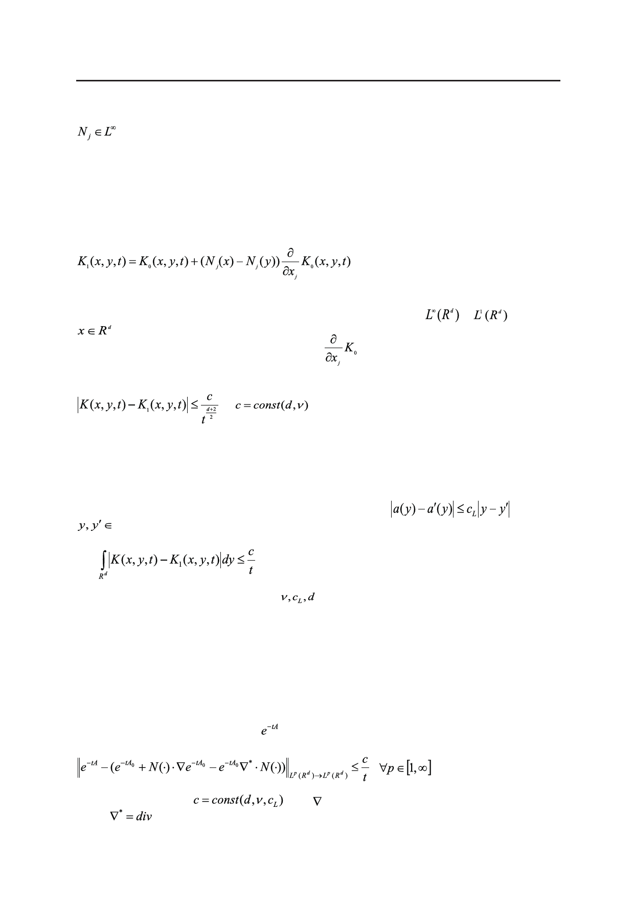

С.Е. Пастухова, О.А. Евсеева
Важной особенностью задачи на ячейке (11) является ограниченность решения:
(□) в силу обобщенного принципа максимума ([9], Приложение В к гл. II).
Раздел 2
До сих пор выписывалось только нулевое приближение для K. Спектральный метод
позволяет дать полное асимптотическое разложение K. Ограничимся здесь лишь первым
приближением. Используя решения задачи на ячейке (11), определим первое приближе-
ние равенством
,
(12)
где по повторяющимся индексам подразумевается суммирование от 1 до d.
Приближение (12) как функция переменной y принадлежит
и
для всех
и t > 0 ввиду ограниченности множителей Nj и экспоненциального убывания на
бесконечности функции K0 и ее производных
по пространственным переменным.
Справедлива оценка (её доказательство дано в [5])
,
,
(13)
показывающая, что K1(x, y, t) доставляет более точное приближение для K(x, y, t) в по-
точечной норме, чем K0(x, y, t) (7). Дополнительное улучшение точности происходит на
порядок t-0.5. В интегральной норме K1(x, y, t) дает такой же выигрыш в приближении по
сравнению с K0(x, y, t).
Теорема 1. Пусть матрица a(y) липшицева, т.е.
для всех
□. Тогда верна интегральная оценка
(14)
с константой, зависящей только от
.
Для доказательства оценки (14) используется второе приближение K2(x, y, t), в постро-
ении которого участвуют решения вспомогательных задач на ячейке, не только первого
порядка, т.е. задачи (11), но и выше (см. эти задачи, например, в [9], где они выписывают-
ся рекуррентно). Липшицевость коэффициентов матрицы a(y) обеспечивает принадлеж-
ность решений всех вспомогательных задач на ячейке пространству L∞ .
Как следствие из оценки (14), по лемме Шура вытекает
Теорема 2. В предположениях теоремы 1 имеет место оценка для первого прибли-
жения операторной экспоненты :
(15)
с единой константой
ным,
.
, где – градиент по пространственным перемен-
Российский технологический журнал 2017 Том 5 № 5
65